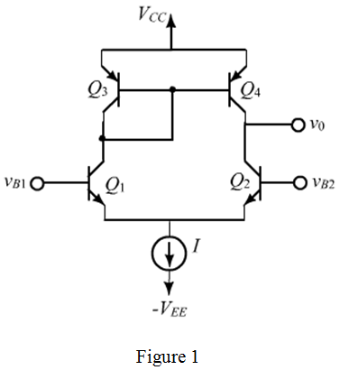

Draw the small signal equivalent of differential amplifier in Figure 1.

Refer to Figure P8.54 in the textbook.
Collector resistors should replace with current sources using pnp transistors. So, replace the collectors with current mirror, which acts as current source.
Draw the bipolar differential amplifier with simple current sources implemented using pnp transistors.

Draw the small signal equivalent of differential amplifier in Figure 1.
The expression for the trans-conductance,  is,
is,

The expression for the small signal output resistance,  is,
is,
Calculate the small signal gain of the circuit.
Substitute  for
for  and for .
and for .
Substitute  for
for  and for
and for  .
.
Thus, the small signal gain of the circuit is .